Note
Go to the end to download the full example code.
Multimodal pretraining with missing modalities: CoMM on OpenMind¶
This tutorial pretrains CoMM [1], a multimodal contrastive method, on the T1-weighted, T2-weighted and FLAIR brain MRI of OpenMind [2], where most sessions miss one or two of these modalities. It explains:
how CoMM handles the missing modalities, in its loss and in the code;
how to train it and probe its representation of age on OpenBHB [3].
CoMM with missing modalities¶
Let
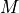
be the number of modalities and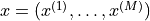
a sample. Two augmentations of it,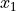
and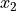
, give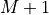
pairs of embeddings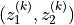
,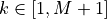
:for
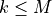
,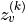
is the unimodal embedding of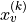
, the augmented scan of modality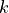
; is the multimodal embedding, fusing all the
modalities of
is the multimodal embedding, fusing all the
modalities of 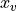
.
CoMM aligns every embedding of one view with the multimodal embedding of the other view. Over a batch of
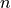
samples, with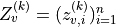
:
where
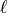
is the InfoNCE loss with temperature , on
, on
 -normalized embeddings. In
-normalized embeddings. In 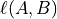
, is a positive pair, and the other samples of
is a positive pair, and the other samples of  and
and  are the negatives:
are the negatives:
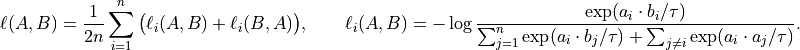
With missing modalities, let
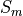
be the samples having modality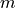
:- fuses the modalities present in each sample, so it
is defined for every sample, and the term
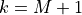
uses the whole batch; the term
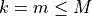
is computed over only (both and
and  are restricted to
, positives and negatives), and skipped when
are restricted to
, positives and negatives), and skipped when
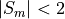
.
In the code, this means:
batching: each modality is a separate tensor, holding the scans of only, so that modalities may have different shapes;
encoding: the backbone only encodes the scans that exist, and an adapter turns them into tokens (possibly a different number per modality);
fusion: the tokens of each modality are scattered into a grid of the samples, and the missing cells are masked out of the attention of the fusion transformer;
projection: the per-modality embeddings go through the projection head on only, so that the missing cells do not enter its batch normalization;
loss: each term keeps the samples of .
Setup¶
from functools import partial
from pathlib import Path
import matplotlib.pyplot as plt
import numpy as np
import pandas as pd
from pytorch_lightning.loggers import CSVLogger
from sklearn.linear_model import RidgeCV
from sklearn.pipeline import make_pipeline
from sklearn.preprocessing import StandardScaler
from torch.utils.data import DataLoader, Subset
from torchvision.transforms import Compose
from nidl.backbones.volume import resnet18
from nidl.callbacks import ModelProbingCallback
from nidl.datasets import OpenBHB, OpenMind
from nidl.estimators.ssl import CoMM
from nidl.transforms import MultiViewsTransform
from nidl.transforms.volume.augmentation import (
RandomErasing,
RandomGaussianNoise,
RandomResizedCrop,
)
from nidl.transforms.volume.preprocessing import CropOrPad, ZNormalization
from nidl.utils.data_parsing import collate_multimodal
Global parameters: the data folders (downloaded on first use), the modalities, the loading options, the number of training steps (None for the whole training) and of OpenBHB images used for the probing (None for all of them).
openmind_dir = "/tmp/openmind"
openbhb_dir = "/tmp/openBHB"
modalities = ("t1", "t2", "flair")
batch_size = 32
num_workers = 8
max_steps = None
max_probe_samples = None
The data¶
OpenMind regroups the images of each session with
group_by="session", and require_all=False keeps the sessions
missing some modalities (as None). Its transforms receive the whole
dict: we apply the two-view augmentations of the open models recipe to
each modality that exists.
collate_multimodal then batches these
samples, with the same order of modalities as in the estimator.
class PerModality:
"""Apply a transform to each modality of a {modality: image} dict."""
def __init__(self, transform):
self.transform = transform
def __call__(self, sample):
return {
modality: None if image is None else self.transform(image)
for modality, image in sample.items()
}
augmentations = PerModality(
MultiViewsTransform(
Compose(
[
RandomErasing(scale=(0.02, 0.15), p=0.8),
RandomResizedCrop(
target_shape=(121, 145, 121), scale=(0.08, 1.0), p=0.8
),
CropOrPad(target_shape=128),
ZNormalization(),
RandomGaussianNoise(p=0.2),
]
),
n_views=2,
)
)
collate = partial(collate_multimodal, modalities=modalities)
datasets = {
split: OpenMind(
openmind_dir,
preprocessing="quasiraw",
modality=modalities,
group_by="session",
require_all=False,
split=split,
transforms=augmentations,
)
for split in ("train", "val")
}
train_loader = DataLoader(
datasets["train"],
batch_size=batch_size,
shuffle=True,
drop_last=True,
num_workers=num_workers,
persistent_workers=num_workers > 0,
collate_fn=collate,
)
val_loader = DataLoader(
datasets["val"],
batch_size=batch_size,
drop_last=True,
num_workers=num_workers,
collate_fn=collate,
)
print(
f"{len(datasets['train'])} training and {len(datasets['val'])} "
"validation sessions"
)
Probing the representation¶
Before the training and after every epoch, a ridge regression of age is
trained on the features of the OpenBHB training set, and evaluated on its
test set (the public "val" split). OpenBHB only has T1w images: each
one becomes a sample whose T2w and FLAIR are missing, and the features are
the multimodal embedding
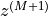
.def as_t1_sample(image):
"""An OpenBHB T1w image as a sample with missing T2w and FLAIR."""
return {"t1": image, "t2": None, "flair": None}
def probe_loader(split):
dataset = OpenBHB(
openbhb_dir,
modality="quasiraw",
target="age",
split=split,
transforms=Compose(
[CropOrPad(target_shape=128), ZNormalization(), as_t1_sample]
),
)
if max_probe_samples is not None:
dataset = Subset(dataset, range(max_probe_samples))
return DataLoader(
dataset,
batch_size=batch_size,
num_workers=num_workers,
collate_fn=collate,
)
probing = ModelProbingCallback(
probe=make_pipeline(
StandardScaler(), RidgeCV(alphas=np.logspace(-2, 6, 17))
),
train_dataloader=probe_loader("train"),
test_dataloader=probe_loader("val"),
scoring=["neg_mean_absolute_error", "r2"],
every_n_train_epochs=1,
on_train_start=True,
prefix_score="age_",
)
The estimator¶
A single 3D ResNet-18 encodes all the modalities into 512 features, a
single token per scan for the fusion transformer: embed_dim is
therefore 512. modality_names gives the names of the logged terms,
which a CSV logger saves for the figures below.
model = CoMM(
encoder=resnet18(n_embedding=512),
num_modalities=len(modalities),
modality_names=modalities,
embed_dim=512,
num_heads=8,
temperature=0.1,
learning_rate=3e-4,
max_epochs=100,
max_steps=max_steps if max_steps is not None else -1,
devices=1,
precision="bf16-mixed",
callbacks=[probing],
logger=CSVLogger("logs", name="comm_openmind"),
)
Pretraining¶
The estimator is trained as any nidl estimator. Besides the loss
loss/train and loss/val, it logs the loss and the accuracy of each
term, e.g. ssl_loss_t1/train, ssl_acc_flair/val or
ssl_loss_fused/train for the multimodal term, and the probing scores
age_test_neg_mean_absolute_error and age_test_r2.
model.fit(train_loader, val_loader)
Training curves¶
The logged metrics give the validation loss and the age probing error (mean absolute error, MAE) along the training. The probing before the training (epoch 0) is the reference of a randomly initialized model.
def plot_training(metrics):
"""Validation loss and OpenBHB age MAE per epoch, from the CSV metrics
of the logger."""
val_loss = metrics.dropna(subset=["loss/val"]).groupby("epoch")["loss/val"]
val_loss = val_loss.last()
score = "age_test_neg_mean_absolute_error"
probe = metrics.dropna(subset=[score])
mae_init = -probe.loc[probe["step"] == 0, score]
mae = -probe.dropna(subset=["epoch"]).groupby("epoch")[score].last()
# epochs completed: the metrics of epoch e are logged at its end
epochs, val_loss = list(val_loss.index + 1), list(val_loss)
probe_epochs = [0, *(mae.index + 1)]
mae = [mae_init.iloc[0], *mae]
color, ink, muted = "#2a78d6", "#1f1f1e", "#6b6a64"
fig, axes = plt.subplots(1, 2, figsize=(9, 3.4), layout="constrained")
fig.patch.set_facecolor("#fcfcfb")
panels = (
(axes[0], epochs, val_loss, "Validation loss (CoMM)"),
(axes[1], probe_epochs, mae, "OpenBHB age MAE, years (lower: better)"),
)
for ax, x, y, title in panels:
ax.set_facecolor("#fcfcfb")
ax.plot(x, y, color=color, linewidth=2, marker="o", markersize=5)
ax.set_title(title, loc="left", fontsize=11, color=ink)
ax.set_xlabel("Epoch", color=muted)
ax.set_xlim(-0.5, probe_epochs[-1] + 0.5)
ax.set_xticks(probe_epochs)
ax.margins(y=0.15)
ax.grid(axis="y", color="#e6e5e0", linewidth=0.8)
ax.tick_params(colors=muted, length=0)
for side in ("top", "right", "left"):
ax.spines[side].set_visible(False)
ax.spines["bottom"].set_color("#c9c8c1")
# label the first and last values only
for xi, yi in ((x[0], y[0]), (x[-1], y[-1])):
ax.annotate(
f"{yi:.2f}", (xi, yi), textcoords="offset points",
xytext=(0, 8), ha="center", fontsize=9, color=ink,
)
return fig
metrics = pd.read_csv(Path(model.trainer.logger.log_dir) / "metrics.csv")
plot_training(metrics)
plt.show()
The figure obtained with a smaller run, on 2 GPUs: the 12,760 training sessions having at least two modalities, at 2 mm (64³ crops), for 9 epochs:
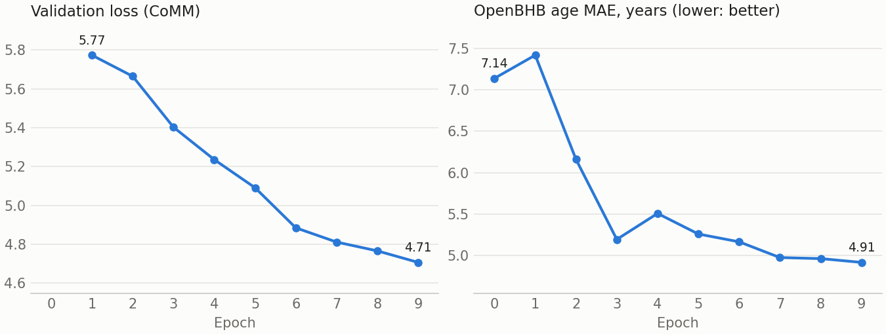
The contrastive objective improves at every epoch, and so does the representation of age, which no modality was trained to predict.
Feature extraction¶
transform returns the multimodal embedding of each
sample, from the modalities it has.
features = model.transform(probe_loader("val"))
print(features.shape)
Estimated memory usage: 0 MB